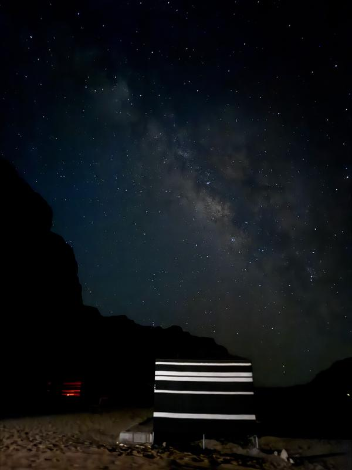
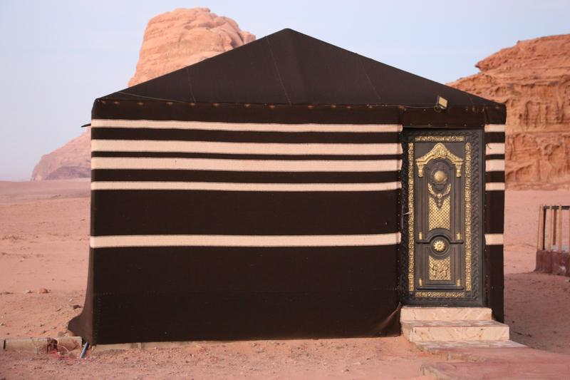
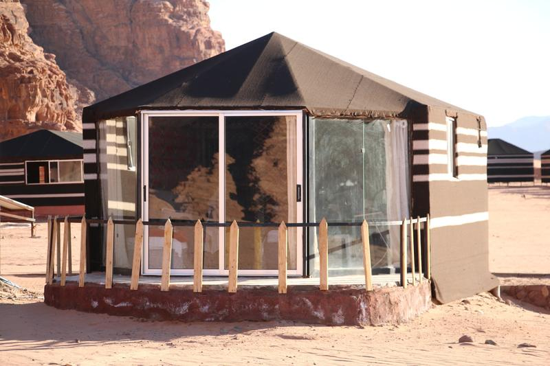
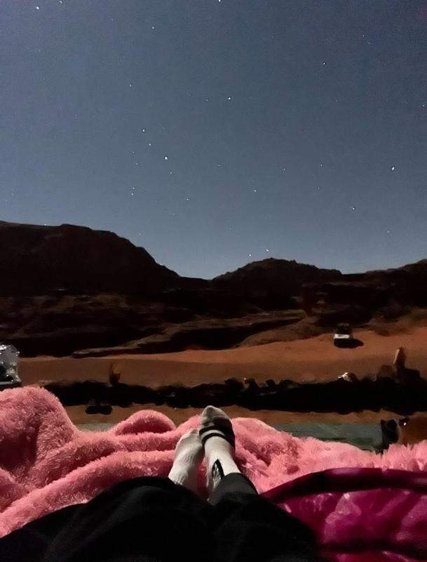

Il deserto, come lo conoscono i beduini
Attraversa la sabbia rossa in jeep, sali su ponti di roccia e vette, cavalca un cammello all'alba e dormi sotto più stelle di quante tu ne abbia mai viste. Zayed e i suoi fratelli sono nati qui e ti mostreranno il loro deserto.

Benvenuto nel nostro deserto
Il Wadi Rum non è un posto da attraversare di fretta. I suoi canyon, le dune e le montagne di arenaria cambiano colore di ora in ora, e il meglio si scopre con calma, insieme a qualcuno che conosce la strada. Passa una giornata a esplorare, condividi un pasto accanto al fuoco, poi dormi nel silenzio del deserto.
Programmi tra cui scegliere
Da un giro in cammello di 30 minuti a quattro giorni di trekking nel deserto aperto.
La vetta più alta della Giordania
Escursione fino alla vetta del Jabal Umm ad Dami, nel profondo sud del Wadi Rum.
Dove passare la notte
Una tenda beduina, una tenda deluxe con bagno privato o un materasso sotto il cielo aperto.
Gestito da fratelli beduini
Zayed e i suoi fratelli sono cresciuti in questo deserto, come la loro famiglia prima di loro.
Scegli il tuo viaggio nel deserto
I prezzi sono a persona e scendono man mano che il gruppo cresce. Ogni programma con pernottamento include una tenda beduina, cena e colazione.
Tour in jeep e pernottamento
جولات بالجيب ومبيتEsplora il Wadi Rum in 4x4 con una guida beduina locale, poi passa la notte al nostro campo.

Tour in jeep di un'intera giornata + pernottamento
Tutto il Wadi Rum in un giorno: dune rosse, canyon e punti panoramici, con il tempo per camminare, arrampicarsi e fare foto.

Tour in jeep di mezza giornata + pernottamento
Un pomeriggio tra i luoghi più famosi del Wadi Rum, poi tramonto, cena e notte al campo.

Tour in jeep di 3 ore + pernottamento
Hai poco tempo? Un giro in jeep di 3 ore tra alcuni dei luoghi più belli del deserto, con tramonto, cena e notte al campo.

Esperienza nel deserto bianco + pernottamento
Lascia la sabbia rossa per il deserto bianco del Wadi Rum, con le sue strane formazioni rocciose e i suoi paesaggi aperti e silenziosi.
Montagne ed escursioni
جبال ومساراتPer escursionisti e scalatori: ponti di roccia, vette e lunghi sentieri tra le montagne.

Avventura al Jabal Burdah + pernottamento
Raggiungi in jeep e a piedi il Jabal Burdah e sali fino al suo famoso ponte di roccia, alto sopra il deserto.

Avventura all'Umm ad Dami + pernottamento
Sali sul Jabal Umm ad Dami, la montagna più alta della Giordania con i suoi 1,854 m, con vista sul deserto in ogni direzione.
Avventure di più giorni
رحلات لعدة أيامDa due a quattro giorni nel deserto con una guida beduina, nelle zone più silenziose del Wadi Rum.

Avventura di 2 giorni nel Wadi Rum
Un tour in jeep di un'intera giornata, una giornata di trekking sul monte Al-Hash, a Wadi Sabat e a Nagza, una notte al campo e una notte sotto le stelle.

Avventura di 3 giorni nel Wadi Rum
Il lato nascosto del Wadi Rum: i luoghi famosi in jeep, poi il Jabal Al-Hash, il deserto bianco e le valli remote di Wadi Sabet.

Trekking di 4 giorni nel deserto del Wadi Rum
Quattro giorni a piedi nel cuore del Wadi Rum con una guida beduina, un veicolo di supporto e un team che cucina e allestisce il campo.
Esperienze nel deserto
تجارب صحراويةEsperienze più brevi, da sole o da aggiungere a qualsiasi tour.

Giro in cammello
Viaggia nel deserto come fanno da generazioni le famiglie beduine. In sella all'alba, al tramonto o all'ora che preferisci.

Osservazione delle stelle
Due ore in un luogo tranquillo lontano dalle luci del campo, dove la Via Lattea attraversa il cielo. Puoi aggiungerla a qualsiasi tour.
Volo in mongolfiera
Sorvola il deserto all'alba e ammira montagne e dune dall'alto.
Esperienza multi-avventura nel deserto
Non sai quale scegliere? Dicci quanto tempo hai e cosa ti piacerebbe fare, e creeremo un programma per te: tour in jeep, trekking di più giorni, scalate in montagna, giri in cammello, sandboarding o un mix di tutto.
Tre modi per passare la notte
Il nostro campo ha docce calde e moderni servizi igienici all'occidentale. Scegli come vuoi dormire al momento della prenotazione.

Tenda beduina, bagno in comune
Incluso nel prezzo del tour. Tende singole, doppie, triple e familiari.

Tenda deluxe, bagno privato
5 JOD in più a persona.

Notte sotto le stelle
5 JOD in più a persona, cena e colazione incluse.
La vita al Desert Tree Camp
Cena accanto al fuoco, tè nel majlis e un deserto che cambia colore ogni ora.


Dal primo messaggio al fuoco del campo
Nessun pagamento online e nessuna commissione di prenotazione. Ci invii una richiesta, ti rispondiamo personalmente e paghi in contanti all'arrivo.
Scegli un tour
Scegli un programma, oppure chiedici di organizzare un mix di attività per il tempo che hai.
Invia la tua richiesta
Indicaci la data, quante persone siete e dove vorresti dormire. Il messaggio ci arriva su WhatsApp.
Confermiamo
Zayed risponde personalmente per confermare la data, il prezzo e il punto d'incontro.
Ci vediamo nel Wadi Rum
Paghi in contanti all'arrivo. Hai cambiato programma? La cancellazione è gratuita.

Conosci Zayed e i suoi fratelli
"Sono Zayed, nato e cresciuto nel Wadi Rum. Da generazioni la mia famiglia vive in questo deserto una vita beduina e nomade. Sono cresciuto nel deserto e dalla mia famiglia ho imparato i suoi paesaggi, le sue tradizioni e il suo modo di vivere."
Oggi gestisco il nostro campo insieme ai miei fratelli. Con anni di esperienza nell'organizzare tour nel deserto e nel gestire il campo, curiamo ogni dettaglio e vogliamo sempre che i nostri ospiti portino con sé bei ricordi, che restino con loro molto tempo dopo aver lasciato il Wadi Rum.
Desert Tree Camp & Tours
Cosa dicono i nostri ospiti
Leggi le recensioni degli ospiti che hanno soggiornato da noi.
Prima di partire
Come arrivo nel Wadi Rum?
Il villaggio di Wadi Rum si trova a circa un'ora di auto da Aqaba e a circa due ore da Petra. Ti veniamo a prendere al villaggio. Il punto d'incontro esatto è su Google Maps, e te lo confermeremo su WhatsApp.
Cosa è incluso nel prezzo?
Ogni programma con pernottamento include una tenda beduina con bagno in comune, cena e colazione. Il tour in jeep di un'intera giornata include anche il pranzo.
I bambini pagano?
I bambini sotto i 3 anni non pagano. I bambini da 3 a 10 anni pagano metà prezzo, e dai 11 anni pagano il prezzo intero.
Come pago?
In contanti all'arrivo. Non c'è nulla da pagare online.
Posso cancellare?
Sì. Dato che paghi all'arrivo, la cancellazione è gratuita. Mandaci solo un messaggio, così possiamo organizzarci.
Perché il prezzo è più basso per i gruppi?
La jeep e la guida costano uguale per una o più persone, quindi il prezzo a persona scende man mano che il gruppo cresce.
Cosa devo portare?
Per il giorno cappello, crema solare e occhiali da sole, scarpe chiuse e comode e qualcosa di caldo. Le notti nel deserto sono fredde, soprattutto da novembre a marzo.
Che forma fisica serve?
Tour in jeep, giri in cammello e osservazione delle stelle sono adatti a tutti. Jabal Burdah e Umm ad Dami prevedono salite ripide e qualche passaggio di arrampicata facile, quindi raccontaci la tua esperienza e ti consiglieremo.
Quando siete aperti?
Tutto l'anno, e puoi prenotare in qualsiasi momento.